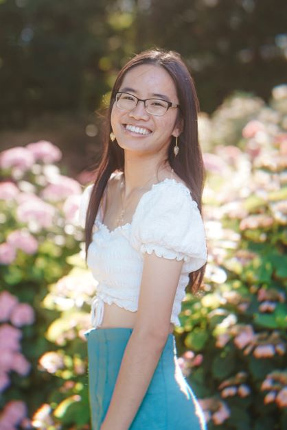

First Name: Minh-Thu (min too).
Last Name: Dinh (din).
Pronouns: she/her/hers.

I'm a fourth-year student at NC State University pursuing a bachelor's degree in Electrical Engineering with a concentration in Renewable Electric Energy Systems.
I have experience and education in power systems, field service work, and electromagnetic research. I plan to work in power systems after graduation.
Outside of engineering, I am passionate about Asian American advocacy and studies outside of higher academia. I am currently a coordinator for an organization focused on As / Am critical thought and community.
I also outreach and teach low-to-middle income STEM students in my scholarship program with the same initiative.
In my free time, I engage in a variety of hobbies that focus on creativity. Right now, I am focused on vegetarian cooking, zine curation, and disposable film photography.
Photo by Tyna Nguyen.